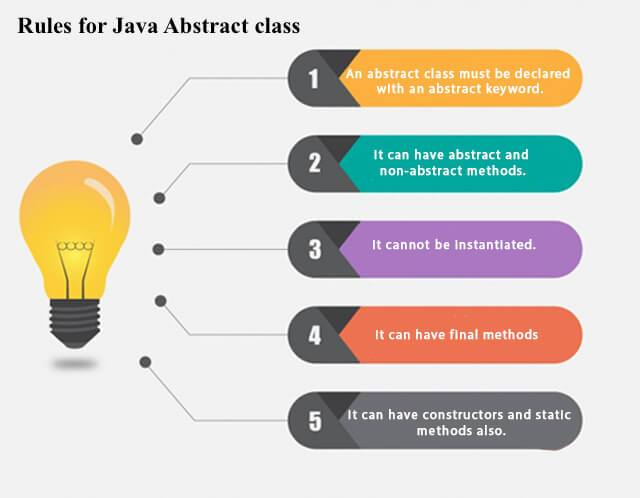
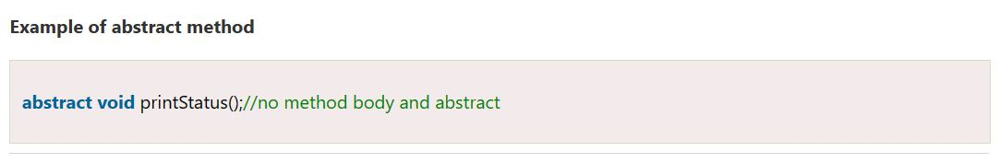
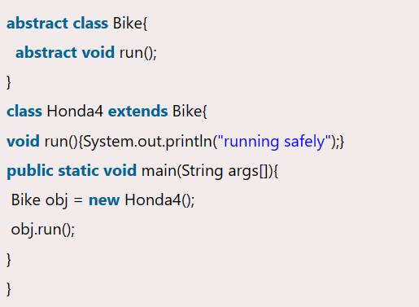

ABSTRACTION - Part 2
🚩Cảm ơn các bạn đã đọc phần 1 của Main Code, Main Code sẽ up lên phần 2 của tính trừu tượng.
Nguồn:
Abstraction trong OOP - Tính trừu tượng trong lập trình hướng đối tượng là gì (t3h.com.vn)
Abstract Class in Java - Javatpoint
🚩Bản tóm tắt:
🔥Abstracts hóa trong Lập trình là quá trình lựa chọn các tập dữ liệu quan trọng cho một đối tượng trong phần mềm của bạn và loại bỏ những tập hợp không quan trọng.
🔥Khi bạn đã mô hình hóa đối tượng của mình bằng cách sử dụng Tính Abstracts hóa dữ liệu trong Java, cùng một bộ dữ liệu có thể được sử dụng trong các ứng dụng khác nhau.
🚩Lớp Abstracts là gì?

🔥Lớp Abstracts là một loại lớp trong OOP, khai báo một hoặc nhiều phương thức Abstracts. Các lớp này có thể có các phương thức Abstracts cũng như các phương thức cụ thể. Một lớp bình thường không thể có các phương thức Abstracts. Một lớp Abstracts là một lớp có chứa ít nhất một phương thức Abstracts.
🚩Phương thức Abstracts là gì?
🔥Phương thức Abstracts là một phương thức chỉ có định nghĩa phương thức nhưng không chứa thực thi. Phương thức không có phần thân được gọi là Phương thức Abstracts. Nó phải được khai báo trong một lớp Abstracts. Phương thức Abstracts sẽ không bao giờ là cuối cùng vì lớp Abstracts phải triển khai tất cả các phương thức Abstracts.
🚩Example Abstract class + Abstract method
🚩Ưu điểm của Abstracts
💥Lợi ích chính của việc sử dụng một Abstracts trong Lập trình là nó cho phép bạn nhóm một số lớp có liên quan với nhau thành anh chị em.
🎈Tính Abstracts trong lập trình hướng đối tượng giúp giảm bớt sự phức tạp của quá trình thiết kế và triển khai phần mềm.
🚩Khi nào sử dụng các phương thức Abstracts và lớp Abstracts?
Các phương thức Abstracts chủ yếu được khai báo trong đó hai hoặc nhiều lớp con cũng đang làm điều tương tự theo những cách khác nhau thông qua các triển khai khác nhau. Nó cũng mở rộng cùng một lớp Abstract và cung cấp các triển khai khác nhau của các phương thức Abstracts.